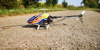
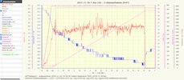

Den T-Rex 250, mit 250 mm Rotorblättern habe ich für 100 € gebraucht gekauft
Den Helikopter habe ich von Paddel auf die Benutzung für ein Flybarless-System umgebaut.
Die erhältlichen Gyro-Empfänger konnten schon einen Helikopter Modus der ein externes FlybarLess-System ersetzt.
Auch hier hatte ich einen größeren Akkusatz, obwohl die Flugzeit pro Akku 6 Minuten betrug.
Trotz schon guter Übung musste ich einiges an Lehrgeld für Ersatzteile bezahlen.
Ein typischer Hubschrauberflug in Form von Daten. Die Spannung fällt über die Zeit, der Strom schwankt stark und die Rotor-Drehzahl bleibt sehr konstant.

Nach einigen Jahren intensivem Fliegen mit Helikoptern habe ich dann doch wieder den Schwerpunkt auf den Segelflug gelegt. Hier sind Flüge mit einer Stunde Flugzeit fast immer möglich und man muss nicht permanent eine größere Anzahl Akkus laden.